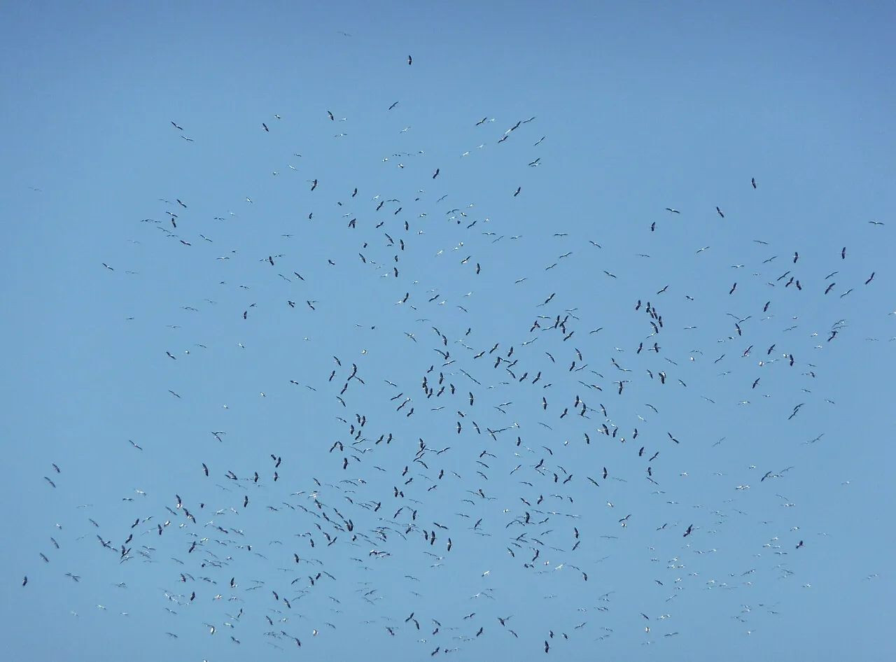
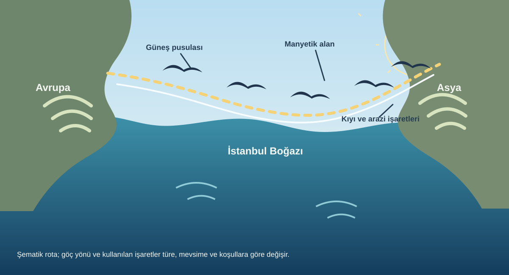

Her yıl çok sayıda kuş, üreme ve kışlama alanları arasında mevsimsel yolculuk yapar. Türkiye, Avrupa ile Asya’nın birleştiği konumu ve çevresindeki farklı habitatlarıyla göç yollarının kesiştiği ülkelerden biridir. İstanbul Boğazı, özellikle karada yükselen hava akımlarından yararlanan leylekler ve bazı yırtıcı kuşlar için dikkat çekici bir geçiş noktasıdır. Fakat her göçmen kuş aynı rotayı izlemez; küçük ötücü kuşlar, su kuşları ve süzülerek uçan büyük türler farklı zamanlarda ve farklı güzergâhlarda hareket edebilir.

Boğaz neden göç yolu üzerinde?
Göç güzergâhları, haritada çizilmiş düz çizgiler değildir. Kuşlar enerji harcamasını, besin bulabileceği durakları, rüzgârı ve coğrafi engelleri birlikte hesaba katan bir yolculuk yapar. Boğazlar, kıtalar arasındaki su geçişini daraltarak bazı kara kuşları için denizi aşılabilir bir noktada toplar. İlkbahar ve sonbahardaki göç hareketlerinin yönü mevsime göre değişir; Boğaz’ın hangi tarafında ve hangi yönde yoğunluk görüleceği de tür, hava ve göç takvimine bağlıdır.
Özellikle leylekler ve geniş kanatlı yırtıcılar, kanat çırpmadan yükselmelerini sağlayan termik hava akımlarını kullanır. Güneşin ısıttığı kara üzerinde yükselen hava, kuşlara enerji tasarruflu süzülüş olanağı verir. Açık deniz üzerinde bu tür yükselici akımlar daha sınırlı olduğundan, karayı izleyen bir rota ya da dar bir geçiş tercih edilebilir. Boğaz çevresindeki kıyı çizgileri ve yamaçlar da bazı türlere görsel işaretler sunabilir. Bu durum tüm kuşların Boğaz’dan geçtiği anlamına gelmez; türlerin rotaları ve denizi aşma biçimleri farklıdır.
Kuşlar yönlerini hangi işaretlerle buluyor?
Bilim insanları kuşların yön bulmasını tek bir “iç GPS” ile açıklamaz. Farklı duyusal ipuçları, içgüdüsel yönelim ve öğrenilmiş deneyim bir arada rol oynar. Hangi işaretin ne kadar önemli olduğu türden türe, yaşa, günün saatine, hava koşullarına ve kuşun daha önce göç edip etmediğine göre değişir.
Güneş ve iç saat
Gündüz göç eden bazı kuşlar Güneş’i pusula gibi kullanabilir. Güneş gün boyunca gökyüzünde yer değiştirdiği için, yön tayininde biyolojik saatin de hesaba katılması gerekir. Gözlemlenen Güneş açısı ile günün saatini ilişkilendirmek, kuşun yönünü korumasına yardımcı olabilir. Bulutluluk bu ipucunu azaltabilir; başka duyusal işaretler bu nedenle önem kazanır.
Yıldızlar ve gece göğü
Gece göç eden türler yıldız desenlerinden yararlanabilir. Genç kuşlar gökyüzünün dönme merkezinin çevresindeki yıldızların hareketini gözleyerek yönleri öğrenebilir. Bu, belirli bir yıldızın peşinden gitmekten çok, yıldızların gökyüzündeki düzenini pusula işareti olarak kullanmaya benzer. Şehir ışıkları yıldızların görünürlüğünü azaltarak gece yolculuğunu zorlaştırabilir.
Dünya’nın manyetik alanı
Dünya’nın manyetik alanı, bazı göçmen kuşların yöneliminde rol oynayan başka bir işarettir. Deneyler, belirli türlerin manyetik alanın yönü ve eğimiyle ilişkili ipuçlarına yanıt verebildiğini gösteriyor. Ancak bu algının biyolojik mekanizmasının ayrıntıları ve farklı türlerde nasıl işlediği araştırılmaya devam ediyor. Manyetik alanı, kuşların tek başına izlediği kusursuz bir yol çizgisi gibi düşünmemek gerekir.
Yer şekilleri, kokular ve deneyim
Kıyılar, dağ sıraları, vadiler ve nehirler gibi geniş ölçekli arazi şekilleri yön bulmaya yardımcı olabilir. Bazı türlerde koku ipuçlarının da rol oynadığına dair kanıtlar bulunur. Deneyimli yetişkinler önceki yolculuklardan öğrendikleri rotaları kullanabilir; genç kuşlar ise kalıtsal yönelim programlarından, çevresel işaretlerden veya gruplar hâlinde yolculuk ettiklerinde diğer bireylerden yararlanabilir. Bu öğrenme ve yön bulma biçimleri bütün türler için aynı değildir.
Göç enerjisi nasıl korunuyor?
Uçuş biçimi, gidilecek rota kadar önemlidir. Leylekler ve birçok iri yırtıcı, termiklerden yükselip uzun süre süzülerek enerji tasarrufu yapar. Daha küçük ötücü kuşların bazıları ise özellikle geceleri, daha doğrudan ve kanat çırparak göç edebilir; gündüzleri uygun alanlarda dinlenip beslenir. Kıyılar, sulak alanlar, ormanlar ve diğer uygun duraklar yolculuk sırasında yakıt ikmali işlevi görür. Bu alanların kaybı, kuşların yalnızca konaklayacağı yeri değil, bütün göç yolunun sürdürülebilirliğini etkiler.
Göç yollarını tehdit eden tehlikeler
Göç, uzun mesafe, değişken hava ve sınırlı enerji rezervi nedeniyle zaten zorlu bir yolculuktur. İnsan faaliyetleri bu baskıyı artırabilir:
- Yaşam alanlarının kaybı: Sulak alanların kurutulması, kıyıların yapılaşması ve doğal alanların parçalanması, dinlenme ve beslenme duraklarını azaltır.
- Cam yüzeyler ve ışık kirliliği: Şeffaf veya yansıtıcı camlar kuşlar tarafından açık alan gibi algılanabilir. Gece ışıkları göçmenleri şaşırtabilir, yönlerini değiştirebilir veya aydınlatılmış yapılara çekebilir.
- Enerji ve ulaşım altyapısı: Elektrik hatları, rüzgâr türbinleri ve yüksek yapılar bazı güzergâhlarda çarpışma ya da engel riski yaratabilir. Risk, yer seçimi ve tasarımla değişir.
- Avcılık ve yasa dışı öldürme: Göç sırasında yoğunlaşan kuşlar, özellikle koruma ve denetimin yetersiz olduğu bölgelerde hedef hâline gelebilir.
- İklim ve hava koşullarındaki değişim: Mevsimlerin, rüzgârların ve besin kaynaklarının zamanlaması değiştikçe göç takvimi ile uygun durakların zamanı uyuşmayabilir.
Bu tehditlerin etkisi ülkeye veya tek bir geçiş noktasına bağlı değildir. Bir kuşun üreme alanı, göç koridoru ve kışlama alanı farklı ülkelerde bulunabilir; bir yerdeki habitat kaybı binlerce kilometre uzaktaki toplulukları da etkileyebilir. Bu nedenle göç koridorlarının korunması, ülkeler ve araştırma kuruluşları arasında iş birliği gerektirir.
Boğaz’dan geçen her kuş aynı hikâyeyi anlatmıyor
Boğaz üzerindeki bir göç dalgası, göçün tamamını temsil etmez. Kuş sayıları mevsime, hava durumuna, türlere ve gözlem noktasına göre değişir. Bir türün İstanbul çevresinde izlediği rota, başka bir türün daha batıdan, doğudan veya farklı bir deniz geçişinden gitmesine engel değildir. Gözlem ve sayımlar, bu değişkenliği anlamak ve göçmen kuşlar için kritik alanları saptamak açısından önem taşır.
Kuşlar göç ederken gökyüzünü, Dünya’nın alanlarını ve yeryüzündeki manzarayı birlikte okur; ama bu sistem hatasız değildir. Uygun dinlenme alanları ve güvenli geçişler, duyusal yetenekleri kadar yolculuğun başarısını belirler. Türkiye’nin Boğazları bu büyük yolculuğun görünür duraklarından yalnızca biridir; onları korumak, kuşların sınırlar ötesindeki yaşam döngüsünü korumanın bir parçasıdır.
Kaynaklar ve ileri okuma
- BirdLife International, Migratory Birds — göç yolları, önemli durak alanları ve göçmen kuşların karşılaştığı tehditler.
Yön bulma ipuçları ve göç stratejileri türlere göre değişir; manyetik algı ve bu duyunun biyolojik temeli üzerine araştırmalar sürmektedir.